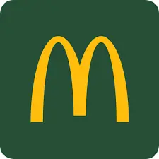
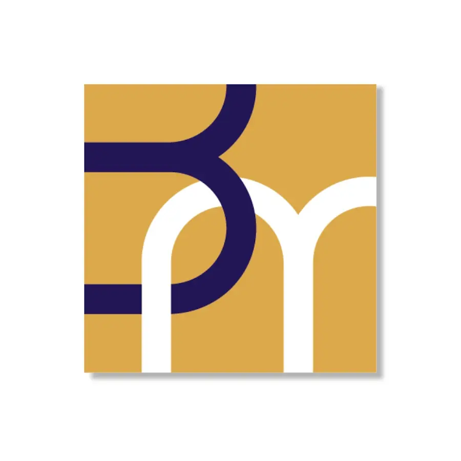

Mon Parcours
Une transition guidée par la recherche de la rigueur, de l'organisation et du plaisir partagé.
Le choix de l'artisanat
Le virage vers le CAP Pâtissier
C'est sur le terrain qu'est née ma certitude : j'ai besoin du lien humain direct, de créer de mes mains et d'apporter une satisfaction immédiate à travers un produit concret. La pâtisserie combine cet amour du partage avec mon besoin permanent d'amélioration technique.
La rigueur algorithmique
BUT Informatique - IUT A de Lille, Villeneuve d'Ascq
L'apprentissage de la logique de programmation m'a transmis une compétence fondamentale : la méthode. Concevoir une architecture logicielle ou structurer une recette de pâtisserie demande la même précision chirurgicale, où chaque étape influe directement sur le résultat final.

Mon premier contact avec le monde du travail
Équipier polyvalent & Formateur - McDonald's Hallennes-Lez-Haubourdin
Plus de trois années passées à gérer le stress des périodes de forte affluence, l'endurance physique et le respect absolu des normes d'hygiène strictes. En tant que formateur, j'y ai développé un sens aigu de la cohésion d'équipe et de la transmission. Cette étape de ma carrière a joué un rôle décisif dans mon choix d'orientation future.

Lycée Privé Sainte-Marie Beaucamps-Ligny
Baccalauréat Général - Mention Bien + Mention Européenne
Spécialités : Sciences de la Vie et de la Terre - Mathématiques - Numérique et Sciences de l'Informatique - Section Euro Anglais Physique Chimie